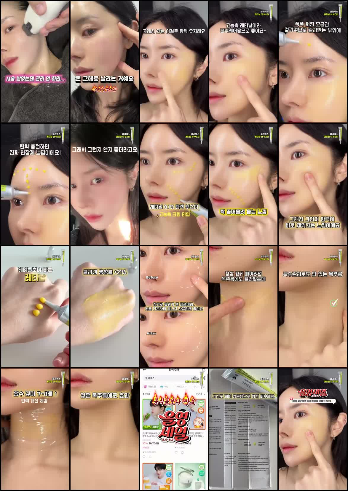
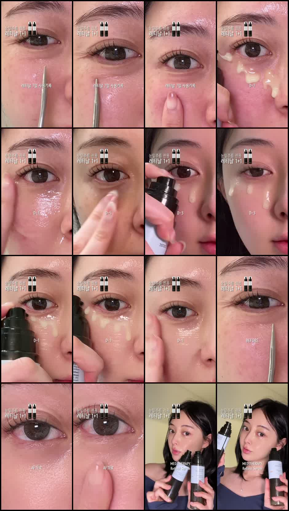
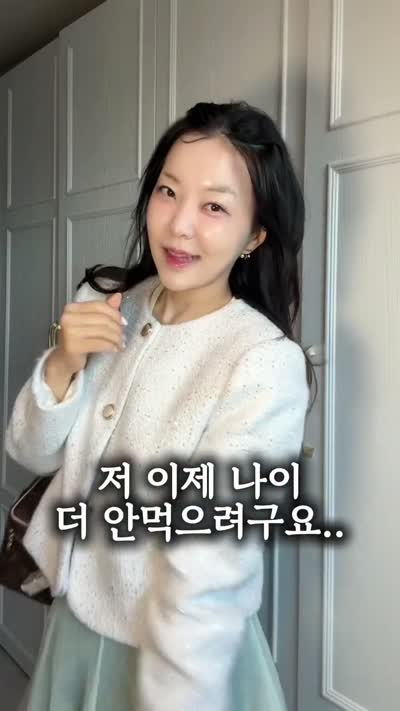
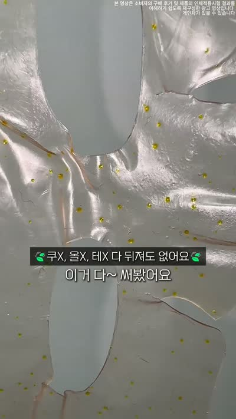

새로 활용할 장면 · 메디테라피
화장 끼임, 화장 뜸을 먼저 보여주기.
팔자주름도 심해서 화장 끼임이 장난 아니었는데
21초 화면 자막과 볼·팔자 접사. 자사에서 아직 사용하지 않은 장면으로, 문제 제기 첫 컷에 활용할 후보입니다.
적용 제안 화장이 끼는 부위를 먼저 짚고 → 피부결 고민 → 국소 케어 루틴으로 연결. 레퍼런스의 구도와 문제 제기를 차용해 자사 장면으로 제작합니다.
21초부터 원본 보기 ↗1. 레티날 경쟁사 키워드
아래 따옴표는 경쟁사 원문이다. 광고 성과를 입증하거나 우리 제품 효능으로 확정한 문구가 아니다. 수치·함량·랭킹은 해당 경쟁사 제품의 표현으로 기록한다.
 닥터디퍼런트주름은 싹, 탄력은 쫙원본 보기 ↗
닥터디퍼런트주름은 싹, 탄력은 쫙원본 보기 ↗크림 · 효과 단정·최상급 표현
“주름은 싹, 탄력은 쫙!”
화면 연출 빨간 패키지와 주름·탄력 두 줄 대형 카피를 결합.
자사 적용 주름과 탄력을 두 박자로 대조하는 첫 2초 카피, 제품+대형 글자 정지 소재
 닥터디퍼런트주름·모공·결을 한 질문으로원본 보기 ↗
닥터디퍼런트주름·모공·결을 한 질문으로원본 보기 ↗크림 · 복합 고민·함량 강조
“주름+모공+결 고민, 정답은?”
화면 연출 세 고민을 질문으로 묶고 제품과 레티날 그래픽을 제시.
자사 적용 세 고민을 한 화면에서 짚고 제품으로 전환하는 문제 묶음
 셀리맥스저녁에 바르고 자면 끝원본 보기 ↗
셀리맥스저녁에 바르고 자면 끝원본 보기 ↗크림 · 간편·완결 표현
“저녁에 바르고 자면 끝!”
화면 연출 욕실 도포에서 침대·수면 루틴으로 전환.
자사 적용 밤 도포→수면→아침 확인의 시간 흐름
 셀리맥스2년을 기다린 레티날 듀얼 크림원본 보기 ↗
셀리맥스2년을 기다린 레티날 듀얼 크림원본 보기 ↗크림 · 대기 기간·순위 강조
“2년을 기다린 신제품”
화면 연출 튜브를 반복 배열하고 출시 카피를 크게 배치.
자사 적용 개발·대기 서사형 출시 소재. 우리 실제 개발 이력이 있을 때 해당 기간 사용
 온그리디언츠레티날 0.2%, 바르는 9만 샷원본 보기 ↗
온그리디언츠레티날 0.2%, 바르는 9만 샷원본 보기 ↗세럼·부스터 · 수치·시술 연상
“레티날 0.2% 바르는 9만 샷”
화면 연출 인물·튜브 옆에 0.2%와 9만 샷을 대형 글자로 노출.
자사 적용 함량과 샷 이미지를 결합하는 시술 연상형. 자사 수치·전달기술 확인 항목으로 등록
 에이프릴스킨깊은 목주름을 짚는 전후 비교원본 보기 ↗
에이프릴스킨깊은 목주름을 짚는 전후 비교원본 보기 ↗세럼 · 고민 별명·짧은 기간 변화
“노화의 나이테 ‘깊은 목주름’”
화면 연출 목주름 전후를 좌우로 나누고 같은 부위를 원으로 표시.
자사 적용 목주름 부위를 먼저 보여주고 고민을 별명으로 기억시키는 부위형
 셀리맥스관리실에서 집으로 이어지는 루틴원본 보기 ↗
셀리맥스관리실에서 집으로 이어지는 루틴원본 보기 ↗부스터 · 함량·고농축 표현
“시술 받았는데 관리 안 하면…”
화면 연출 첫 컷 관리실 핸드피스 → 12초 이마·볼에 소량씩 점도포 → 38초 목 부위를 랩으로 감싼 밀착 연출.
자사 적용 관리실 컷→집에서 바르는 루틴으로 이어지는 시술 후 관리 서사
 온슬로잠든 사이 미간 패치원본 보기 ↗
온슬로잠든 사이 미간 패치원본 보기 ↗패치 · 주름 삭제 비유
캡션 “주름 지우개 ‘레티날 패치’”
화면 연출 미세 도트 그래픽 → 수면 중 미간 패치 → 아침 제거.
자사 적용 지우개 별명과 수면 기록 포맷의 결합. 패치 부착 동작은 크림 레퍼로 혼동하지 않음
조사 결과: ‘주름 지우개’ 정확 일치 사례는 이번 확인 범위에서 패치였다. 얼굴용 레티날 크림의 직접 사례로 바꾸어 보고하지 않는다. 크림에서는 주름·탄력 대조, 함량, 숙면 루틴이 실제로 확인됐다.
메디테라피 공식 크림 상세는 요철·매끈함을 전면에 두고, 닥터디퍼런트 공식 상세는 레티날 함량·리포솜·주름·탄력을 설명한다. 같은 레티날도 제품별 중심 고민이 다르다. 메디테라피 공식 상세 · 닥터디퍼런트 공식 상세
처치·시술 연출 5개

셀리맥스 · 부스터
관리실에서 집으로
셀리맥스 광고 첫 장면: 누운 얼굴에 핸드피스 접촉, 이어서 집에서 노란 제형 점도포
자사 적용 관리받는 상황 1컷→같은 고민 부위의 홈케어 컷
관리실 장면과 자사 도포 장면을 각각 신규 제작. 기기 효과를 크림 결과로 연결하지 않음
광고 원본 ↗
메디테라피 · 세럼
고민 부위 지목
메디테라피 광고 초반: 눈밑 주름을 금속 도구 끝으로 가리킴
자사 적용 손끝·둥근 도구로 고민 부위를 정확히 보여주는 접사
눈밑을 찌르는 동작이 아니라 위치를 짚는 화면
광고 원본 ↗
셀리맥스 · 부스터
부위별 점도포 → 랩 밀착
12초: 이마·볼에 제형을 조금씩 짠다. 38초: 목 부위를 랩으로 감싼 모습을 보여준다.
자사 적용 소량씩 짜는 정밀한 손동작과 랩 밀착이라는 관리 과정을 두 장면으로 구체화.
원본 화면 문구: 흡수 깊이 7~8배 ↑ / 탄력 개선 체감.
광고 원본 ↗메디테라피 · 세럼
날짜 기록
R22의 D-7/D-5/D-3/D-1→Before/After
자사 적용 실제 같은 구도 사용 기록을 짧게 연결
우리 사용 기록 확보가 필요. 타사 변화 장면은 레퍼 캡처로만 사용
광고 원본 ↗
에이프릴스킨 · 세럼
면봉 국소 케어
에이프릴스킨 광고 후반: 흔적 부위에 면봉으로 제품 도포
자사 적용 갈색 흔적 위치→쌀알 도포→손끝 흡수
기미 흔적 시나리오의 동작 레퍼로 우선 적용
광고 원본 ↗R65는 사용법 설명 중간에 관리실 기기 컷을 삽입한다. R83은 기기 컷을 처음에 배치한다. 같은 시술 장면도 시작에 두는지 중간에 두는지에 따라 훅과 증거의 역할이 달라진다. 이번에는 첫 2초 배치와 국소 도포를 따로 테스트한다.
2. 소구별 BP 선별
| 축 | 핵심 사례 | 확인한 화면·가져올 요소 | 적용 |
|---|---|---|---|
| 주름·탄력 | 메디큐브 EGF NAD 앰플 7074  원본 열기 ↗ |
0초 인물→상하 Before/After→제품→성분→도포. 31.1초 원본 확보 | 기미와 주름을 함께 고민하는 신규 대본의 전개 참고 |
| 중안부 볼 꺼짐 | 메라블 252602 원본 열기 ↗ 원본 열기 ↗ |
볼 꺼짐 원 표시, 상하 비교, 7일·14일 루틴. 34.6초 원본 확보 | 레티날 탄력 출시 소재 후보. 기미크림 볼륨 효과로 전용하지 않음 |
| 중안부 모공 | 피캄 252404  원본 열기 ↗ |
볼 중앙 접사, 마스크 제거, 모공 CG 삽입. 31.9초 원본 확보 | ‘중안부’가 무엇을 뜻하는지 화면으로 특정하는 구도 참고 |
| 수면 톤업 | 메디테라피 1152271217148179 원본 열기 ↗ 원본 열기 ↗ |
쌩얼 상황극→도포→Before/After→침대 기상 | 크림_10과 연결. 톤업크림의 즉각 색상 변화와 멜라크림의 사용 기간을 섞지 않음 |
| 기미 흔적 | 프롬메디 1955986465364033 원본 열기 ↗ 원본 열기 ↗ |
볼 기미 지목→튜브→성분→브러시 도포→상하 비교 | 크림_11과 연결, 국소 도포 동작 우선 |
| 트러블 흔적 | 에이프릴스킨 협업 에이프릴스킨 광고 원본 열기 ↗ 원본 열기 ↗ |
생활 공간 셀카·성분 설명·흔적 부위 면봉 | 기미 흔적과 트러블 흔적은 별도 카피로 관리 |
중안부 테스트는 ‘볼이 꺼져 보임’, ‘볼 중앙 모공’, ‘처져 보이는 탄력’ 중 하나를 먼저 고른다. 세 문제를 ‘탱탱’ 한 단어로 묶으면 무슨 장면을 만들어야 하는지 불명확하다. 메라블은 볼륨, 피캄은 모공 중심이다.
Before/After 사용 방식
- 메라블: 상하 분할과 원 표시로 비교 부위를 고정한다.
- 메디큐브: 볼·턱 접사를 상하 분할하고 다음 장면에서 제품을 보여준다.
- 메디테라피 눈밑 레티날: 날짜 기록을 먼저 쌓고 마지막에 비교한다.
- 프롬메디: 전후를 같은 측면 구도로 배치한다.
우리 촬영은 동일 인물·각도·조명·거리로 기록한다. 위 항목은 비교 화면의 구성 분석이다. 경쟁사 비교 결과의 진위나 자사 개선 효과를 이번 화면 검수로 확인한 것은 아니다.
3. 추가 광고 포맷 제안
제품 소개형·인터뷰형·CG 합성형을 계속 만드는 대신, 아래에서 첫 3개를 우선 테스트한다. 후보 편수는 배정이나 확정 납기와 다르다.
우선 테스트
밤→아침 생활 루틴
‘잠들기 전, 기미 관리 끝내셨나요?’ + 맨얼굴
밤 국소 도포→불 끄기→아침 루틴→성분→CTA
차용 범위 두 광고의 밤·아침 장면을 연결한 신규 구성.
준비할 소스 같은 배우의 침실·거울·제품 컷. 셀리맥스 광고·메디테라피 참고
우선 테스트
같은 자리 사용 기록
‘가리기 전에, 이 자리부터 기록했어요’ + 볼 접사
같은 구도 Day 1/7/14→도포→제품 정보
차용 범위 원본의 날짜 기록 구조를 자사 사용 기록에 적용.
준비할 소스 실제 사용 기록. 메디테라피 광고·메라블 참고
우선 테스트
무대사 국소 도포
‘기미 흔적 있는 자리만, 콕’
손가락 지목→제형→면봉 도포→톡톡 흡수→짧은 성분·CTA
차용 범위 원본은 설명이 있는 영상. 도포 동작을 가져와 무대사·소리 중심으로 재구성.
준비할 소스 얼굴·손·튜브 실사, 마찰음·캡 여는 소리. 에이프릴스킨 광고 동작 변형
이 광고에서 가져왔어요
에이프릴스킨후반 면봉 국소 도포 동작원본 보기 ↗후속 후보
반론 먼저 답하기
‘기미크림인데 주름도요?’
질문 카드→미백·주름개선 기능성→제형·도포→CTA
차용 범위 질문 훅만 구조 참고. 기미크림인데 주름도요?와 문답 전개는 신규 기획.
준비할 소스 질문 카드·튜브·얼굴. 질문은 기획 문구로 제작
이 광고에서 가져왔어요
닥터디퍼런트여러 고민을 질문으로 묶는 첫 카피원본 보기 ↗후속 후보
공병·사용량 기록
‘언제 이렇게 다 썼지?’
사용 기록→빈 튜브→꾸준한 루틴→새 제품
차용 범위 원본의 공병·반복 사용 증거를 자사 튜브로 바꾸는 제안.
준비할 소스 실제 공병·사용 기간 자료. 메디테라피 광고 참고
이 광고에서 가져왔어요
메디테라피공병 배열로 시작하는 사용 이력원본 보기 ↗후속 후보
1인 2역 쌩얼 상황극
‘여행 가기 전날의 나 / 다음 날의 나’
걱정하는 나→관리 루틴→아침 준비
차용 범위 상황 훅만 차용. 1인 2역과 여행 전날·다음 날 설정은 신규 기획.
준비할 소스 1인 2역·여행 가방·침실. 메디테라피 상황 훅 변형
이 광고에서 가져왔어요
 메디테라피쌩얼 상황 훅과 기상 장면원본 보기 ↗
메디테라피쌩얼 상황 훅과 기상 장면원본 보기 ↗추가 포맷은 신규 가설이다. 참고 소재가 장기 게재됐다는 사실만으로 새로 만든 포맷의 성과를 보장하지 않는다.
첫 테스트 구성
- 크림_10은 기존 대본·캡처를 활용하고 밤 루틴 첫 문구 A/B로 시작한다.
- 크림_11은 ‘기미 흔적’ 키워드를 유지하고 도포 장면을 앞당기는 변주를 준비한다.
- 신규 주름 복합 고민안은 같은 제품·성분·CTA를 유지하고 첫 문구만 바꿔 비교한다.
가격은 11/17 결정대로 19,900원 유지 기준. 이번 대본 CTA에는 가격·임의 할인·한정 수량을 넣지 않는다. 판단 시 같은 노출 기간의 광고비·Meta 구매·구매금액을 함께 보고, 3초 시청률은 첫 장면 개선 신호로만 사용한다.
4. 금요일 논의할 결정
| 결정 | 준비한 선택지 | 현재 상태 |
|---|---|---|
| 기미 신규 소구 | 수면 루틴 / 기미 흔적 / 주름 복합 고민 | 기존 크림_10·11 유지, 주름 복합 고민은 크림_12·무대사 국소 도포는 크림_13에 등록 |
| 레티날 메인 고민 | 주름 / 중안부 탄력 / 모공·결 | 경쟁사 카피·화면 확보, 자사 레티날 제품 자료 추가 대조 필요 |
| 새 포맷 | 밤→아침 / 기록 / 무대사 도포 | 제작 구조와 필요한 소스 정리 |
| 제작 배정 | 콘텐츠기획·웹디 담당자가 개인·납기 확정 | 배정 전. 웹디 일정관리 탭 변경 없음 |
자사 레티날의 최종 함량·제형·전달기술·제품 이미지·시험자료는 이번 확인 자료에 없었다. 이 항목은 숫자형 출시 카피를 구체화할 때 필요한 입력값이다. 기미크림 신규 대본 작성과 레퍼런스 조사는 완료했다.